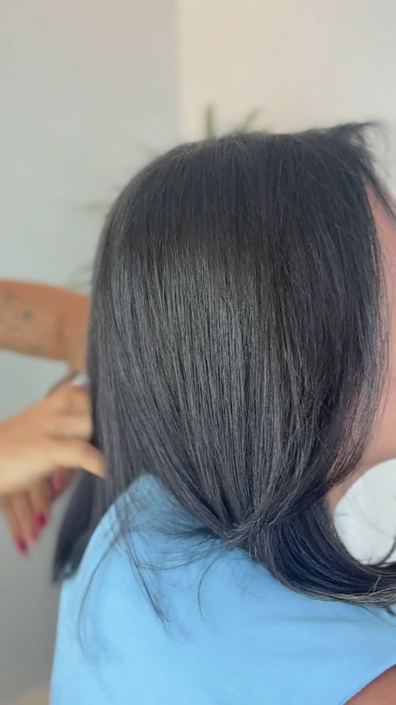
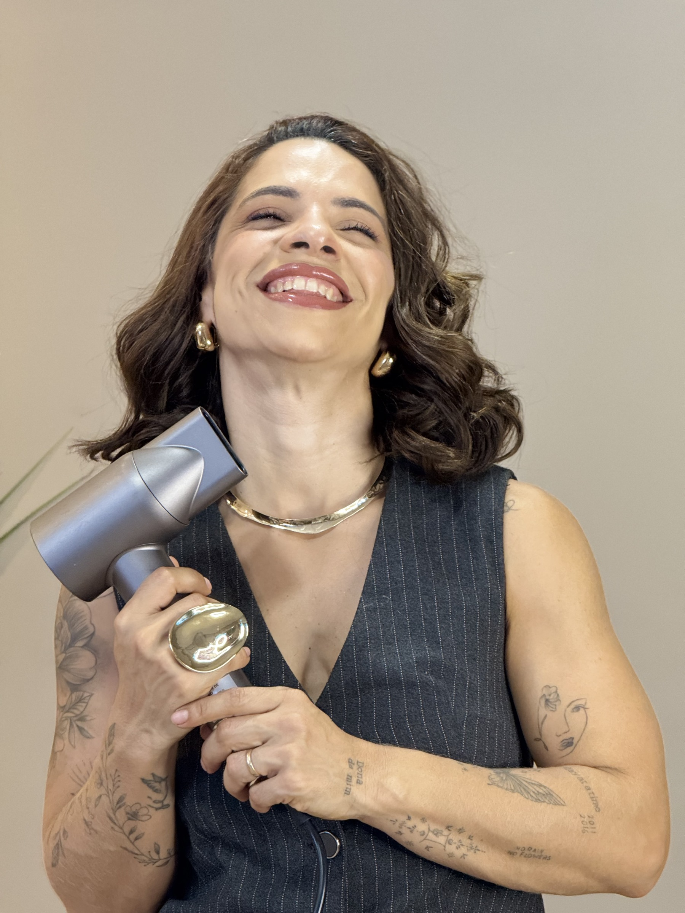
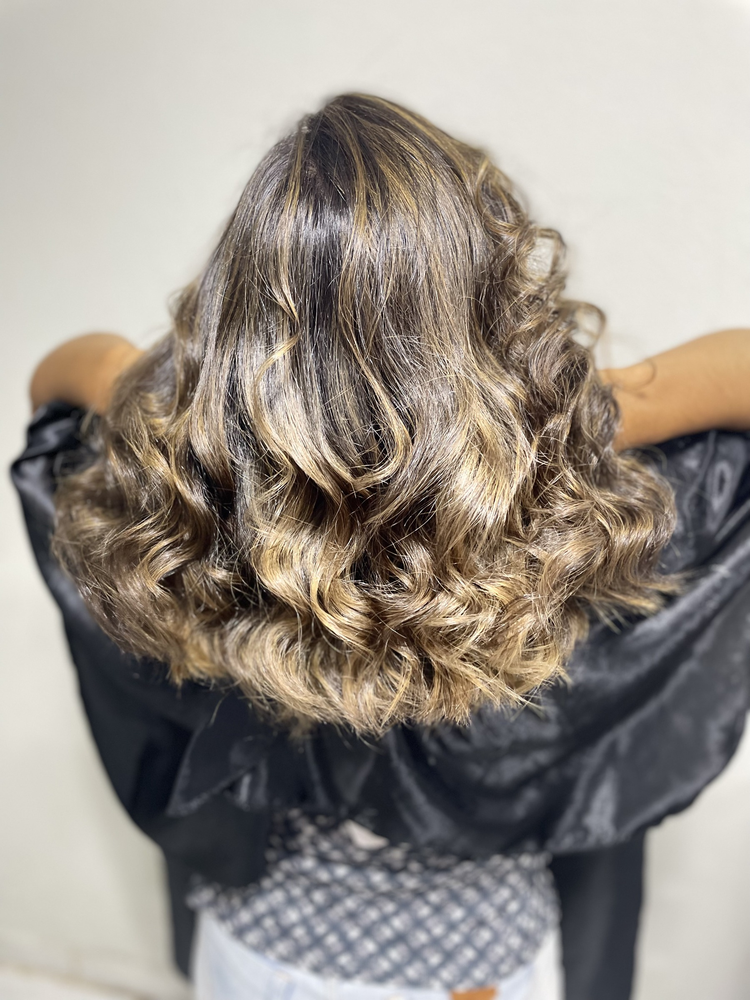
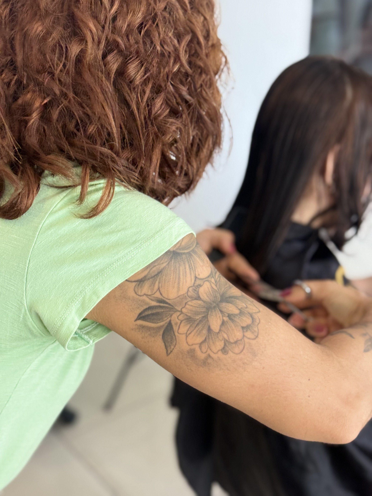
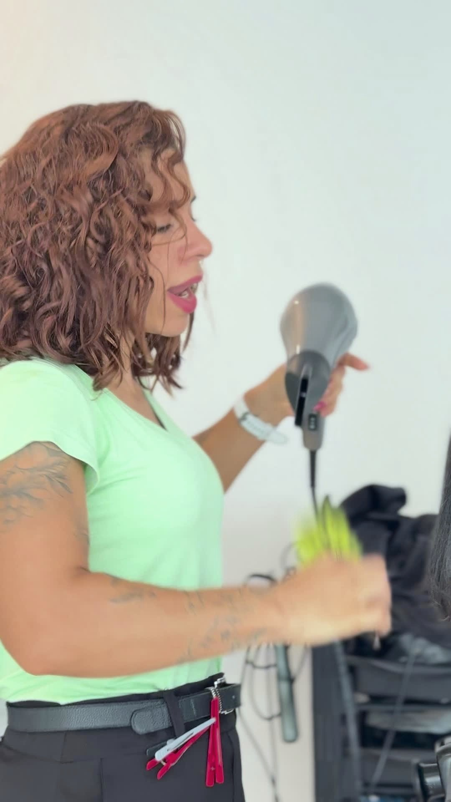

Salva esse post
e manda pra aquela amiga que acabou de fazer selagem.
@cabelosmagalhaes

o segredo pra sua selagem
durar
mais tempo está em casa, meu amor.
Ary Magalhães

Protetor térmico,
sempre
Se você não abre mão da chapinha ou do secador, protetor térmico não é opcional: é obrigação.
Ary Magalhães

Cronograma capilar
Não tem segredo, tem constância.
Ary Magalhães

Nada de dormir com
o cabelo molhado
O fio molhado já é mais frágil, e o atrito com o travesseiro rompe a fibra. Não faz isso!
Ary Magalhães

Manutenção no salão
A depender do seu cabelo. Eu te digo qual é o seu.
Ary Magalhães
e manda pra aquela amiga que acabou de fazer selagem.
@cabelosmagalhaes